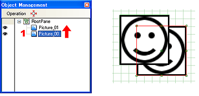

ページ内のオブジェクトの表示の優先順位の変更は、オブジェクト管理ウィンドウで行えます。
表示の優先順位は、オブジェクト管理ウィンドウで、上方に表示されているオブジェクトが手前に表示されます。
表示の優先順位を入れ替える時は、グループウィンドウでオブジェクトの並びを変更すると入れ替わります。
表示を手前にしたいオブジェクトをグループウィンドウで選択します。

マウスでオブジェクトをドラッグして表示の順番を入れ替えると、表示の順序が入れ替わります。